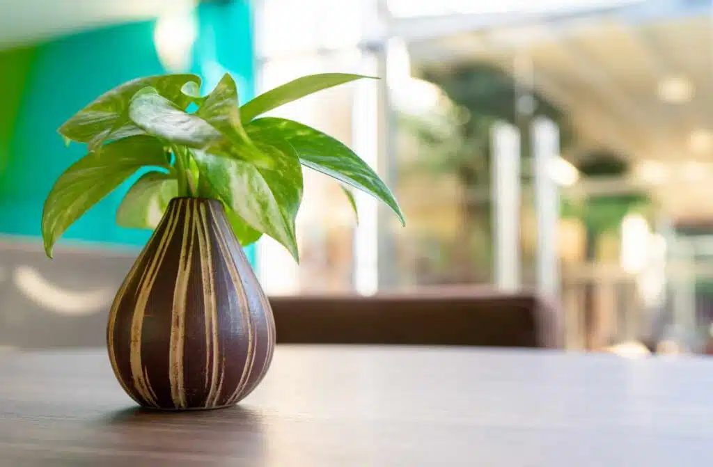

มีชื่อวิทยาศาสตร์ว่า Pachira aquatica เป็นต้นไม้พบได้ในพื้นที่เขตร้อน เป็นต้นไม้มงคลที่นอกจากจะช่วยเสริมความเฮงแล้ว ยังมีประโยชน์หลายอย่าง ไม่ว่าจะเป็นการนำดอกและเมล็ดที่สามารถนำมาประกอบอาหารได้ ทั้งยังปลูกเป็นไม้ประดับเพื่อความสวยงามภายในบ้านได้อีกด้วย ทั้งมงคลและมีประโยชน์จริง ๆ ซึ่งมีความเชื่อกันว่าหากปลูกต้นศุภโชคจะช่วยส่งเสริมเรื่องโชคลาภให้แก่คนปลูก โดยตามหลักฮวงจุ้ยเชื่อกันว่า ศุภโชค เป็นต้นไม้ที่ช่วยดูดเงินทองเข้าบ้านหรือที่ทำงาน ช่วยให้โชคดี มั่งคั่ง ร่ำรวย นอกจากนี้ชื่อภาษาอังกฤษยังมีความหมายดีอีกด้วย